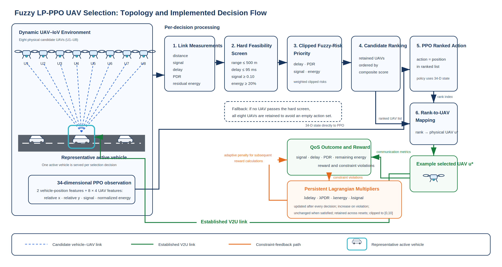
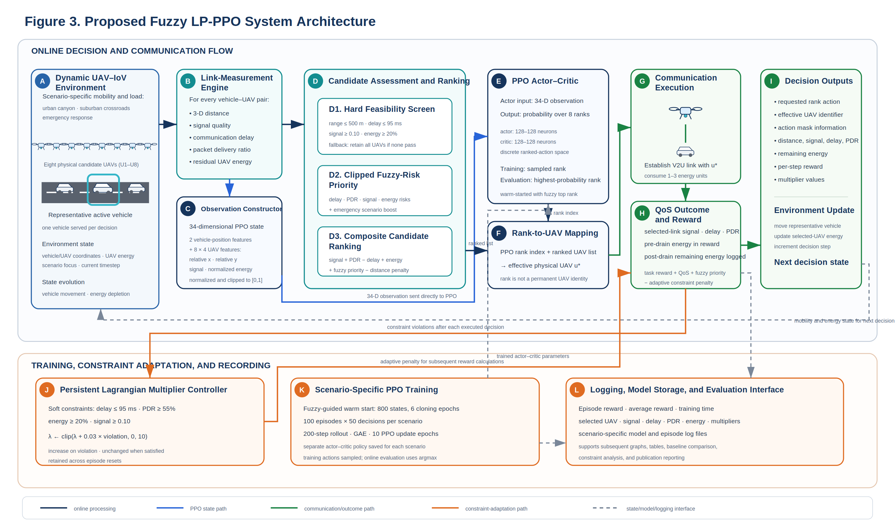
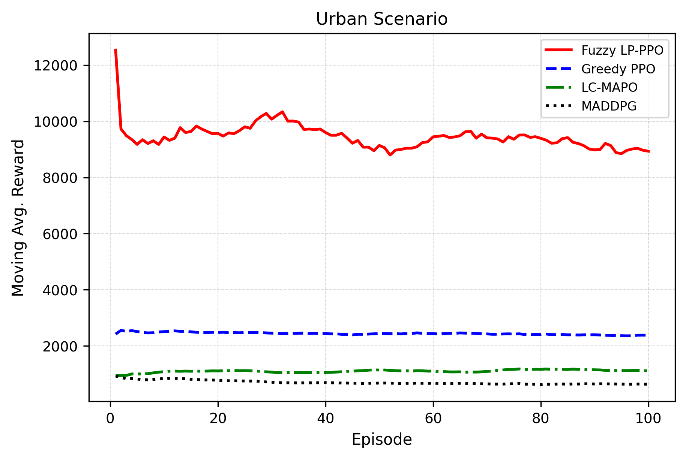

PLACEMENT INTERVIEW / VIVA NOTES
Fuzzy Lagrangian-PPO for UAV-Assisted Internet of Vehicles
A beginner-friendly, technically honest guide to presenting this project
Repository project: Fuzzy-Lagrangian-PPO-UAV-IoV
Your central message: “I built a reproducible UAV-assisted IoV simulation in which a reinforcement-learning policy selects a suitable UAV for a moving vehicle, balancing communication quality, delay, packet delivery, energy, and safety-related QoS constraints.”
How to use tonight: First read Sections 1–4. Memorise the 90-second pitch in Section 14. Then practise the defence answers in Section 15 aloud. Do not memorise every number; understand what each metric means and what the code actually does.
Prepared from the repository’s runnable proposed/ implementation, configuration, and result assets. “Base paper” comparisons in the repository are labelled as report-style mapped indicators, not a validated head-to-head reproduction; see Section 12.
Contents
- The problem in plain English
- Key terms you must know
- What this project proposes
- End-to-end system flow
- Simulation environment and state/action/reward
- Fuzzy logic and Lagrangian constraints
- PPO explained simply
- Scenarios
- Code map and how to demo it
- Metrics and results
- What is genuinely implemented vs. what must be phrased carefully
- Limitations and next steps
- Slide-by-slide presentation plan
- 90-second opening script
- Likely interviewer questions with strong answers
- Quick revision sheet
1. The problem in plain English
Vehicles increasingly need fast and reliable computation and communication: collision warnings, map updates, camera analytics, emergency messages, and cooperative driving. A vehicle may not always have enough local computing power or a stable direct connection to roadside infrastructure. A UAV (drone) can act as a temporary aerial communication/edge-computing helper.
But a vehicle can see several UAVs. Choosing one only because it is nearest is often poor: that UAV may have low battery, a weak link, high delay, or may be unsuitable for an urgent situation. The decision changes as vehicles move and drone energy falls.
One decision at each time step: for the current moving vehicle, which of the available UAVs should be selected so that service quality is high while delay, battery stress, and unsafe QoS violations are controlled?
Why is this a reinforcement-learning problem?
The best decision now affects later conditions: draining one UAV today may make it unavailable later. The input changes over time, and there is no hand-written rule that is perfect in every traffic scenario. Reinforcement learning (RL) learns a policy—an action-selection rule—from repeated interaction with the simulated environment.
What is UAV-IoV-MEC?
| Term | Meaning in this project |
|---|
| IoV | Internet of Vehicles: vehicles communicating with infrastructure, other vehicles, and network services. |
| UAV | Unmanned Aerial Vehicle/drone used as an aerial relay or edge-support node. |
| MEC | Mobile/Multi-access Edge Computing: processing close to the user, reducing cloud round-trip delay. |
| Task offloading | Sending a vehicle task to another resource (here, a selected UAV) for service. |
| QoS | Quality of Service: delay, packet delivery, signal quality, and energy-related performance. |
2. Key terms you must know
Delay
Time required for communication/service. Lower is better, especially for safety or emergency messages. In the current communication model it is distance-dependent plus a small stochastic component.
PDR (Packet Delivery Ratio)
The percentage of transmitted packets that successfully arrive.
PDR = (successfully delivered packets / sent packets) × 100%
Higher is better. It is a proxy for link reliability.
Signal strength
A normalised link-quality value. In this prototype it decreases with 3D distance. It is not a full radio/SINR simulator; say this clearly if asked.
Energy
Each UAV begins with a finite energy value and loses 1–3 units when selected. The policy should avoid repeatedly selecting a weak-battery UAV just because its current signal is attractive.
Policy, episode, state, action, reward
| RL word | Here |
|---|
| State/observation | Vehicle position plus per-UAV relative location, estimated signal strength, and normalised energy. |
| Action | Select one of 8 UAV choices. |
| Reward | Single numerical feedback combining communication quality, task completion, energy/distance/time costs, fuzzy priority, and constraint penalties. |
| Episode | A complete simulated sequence of 1,000 time steps in the training configuration. |
| Policy | The neural network that maps the observation to an action distribution. |
3. What this project proposes
The implemented system is best described as a fuzzy-priority, Lagrangian-penalised PPO UAV-selection environment. PPO is the learning algorithm. Fuzzy logic converts several “risky/urgent” conditions into a smooth priority score. Lagrangian multipliers increase the penalty when QoS constraints are violated repeatedly.

Core idea
- Generate/calculate link metrics for every possible vehicle–UAV connection.
- Hard-screen candidates using communication range, battery, signal, and delay thresholds.
- Calculate fuzzy urgency/priority from poor delay, PDR risk, signal risk, energy risk, and emergency context.
- Use PPO to learn which action works well across many time steps.
- Penalise QoS constraint violations using adaptive Lagrangian multipliers.
Precise terminology: The code’s action is first converted into a ranked valid candidate in uav_iov_env.py. Therefore it is more accurate to say “PPO learns over a safety/fuzzy-ranked selection interface” than “PPO freely chooses any raw UAV with no intervention.” This is a design choice that injects domain knowledge, but it must be disclosed.
4. End-to-end system flow

- Scenario starts: The simulator selects urban canyon, suburban crossroads, or emergency response.
- Observe: The environment creates the state: current vehicle position and link/energy previews for 8 UAVs.
- Candidate evaluation: For every UAV, calculate 3D distance, signal, delay, PDR, energy percentage, validity, fuzzy priority, and score.
- Decision: PPO emits a discrete action. The environment maps it through the ranked valid list to an effective UAV selection.
- Service and feedback: It calculates the reward, drains the selected UAV battery, updates Lagrangian multipliers, moves the vehicle, and produces the next observation.
- Training: PPO updates its actor and critic networks after collected rollouts. Models and episode logs are saved per scenario.
- Evaluation: Results can be visualised as rewards, delay, PDR, energy, signal, reliability, and summary tables.
Useful one-line architecture explanation
“The vehicle is the service requester, the UAV fleet is the aerial edge layer, and PPO is the decision engine that selects a feasible UAV based on changing link and battery conditions.”
5. Simulation environment: what the code models
Physical assumptions
- Area: 2,000 × 2,000 m².
- Fleet: 8 UAVs, randomly initialised in position and altitude (80–200 m).
- Communication range: 500 m.
- UAV stored energy: 0–50 scale (converted to 0–100% for comparisons).
- Each selection drains 1–3 energy units.
Link model
d = √[(xᵥ − xᵤ)² + (yᵥ − yᵤ)² + zᵤ²]
If d ≤ 500: signal = max(0.1, 1 − d/500); otherwise signal = 0.05
Delay = min(100, d/10 + random(1…9))
PDR = max(50, 100×signal − delay/2)
This model deliberately makes distance important: as a UAV is farther away, link quality falls and delay rises. It is a simulation abstraction, not a calibrated 5G/6G channel model.
Observation vector
Dimension = 2 + 8 × 4 = 34. It contains normalised vehicle x/y coordinates, then for each UAV: normalised relative x, normalised relative y, signal preview, and normalised energy.
Hard feasibility checks
| Constraint | Threshold | Purpose |
|---|
| Distance | ≤ 500 m | Reject out-of-range links. |
| Energy | ≥ 20% | Protect low-battery UAVs. |
| Signal | ≥ 0.10 | Reject very weak links. |
| Delay | ≤ 95 ms | Keep latency within QoS limit. |
6. Fuzzy priority and Lagrangian constraints
Why fuzzy logic?
Real service priority is not naturally binary. “Delay is a little high,” “battery is becoming low,” and “signal is weak” should influence a decision gradually. The code normalises these risks to 0–1 and mixes them into a fuzzy-priority value.
priority = clamp[0.35×delay_urgency + 0.25×PDR_risk
+ 0.25×signal_risk + 0.15×energy_risk + 0.10×emergency_boost, 0, 1]
In an emergency scenario, emergency_boost = 1. This makes the agent give additional importance to urgent/weak-QoS cases.
What is a Lagrangian penalty?
Normal RL might chase high immediate reward while breaking service constraints. A constrained formulation says: maximise reward subject to delay, PDR, signal, and energy limits. Lagrangian multipliers turn violations into a penalty. If violations continue, the relevant multiplier grows, making the violation more expensive.
Reward = task_reward + QoS_score + 20×fuzzy_priority − Σ λᵢ × violationᵢ
λᵢ ← clip(λᵢ + 0.03 × violationᵢ, 0, 10)
For example, if delay exceeds 95 ms, delay violation is max(0, delay − 95). A persistent high delay increases λ_delay, so future high-delay choices lose more reward.
Reward components
QoS score = 190×signal + 1.5×PDR − 1.2×delay + 2.2×energy_percent
Task reward = 15×completed − 0.002×distance − 0.08×energy_used − 0.05
Interview phrase: “Fuzzy logic supplies interpretable urgency awareness; the Lagrangian term supplies adaptive constraint awareness; PPO learns the sequential trade-off.”
7. PPO explained simply
Proximal Policy Optimization (PPO) is an on-policy actor–critic reinforcement-learning algorithm. The actor proposes actions. The critic estimates how good a state is. PPO improves the actor carefully: it clips each update so the policy does not change too drastically from one training iteration to the next.
Why PPO here?
- Works well with continuous neural policies and is also effective for a discrete selection action.
- More stable and simpler to implement than many alternatives.
- Stable-Baselines3 provides a reliable training implementation.
- Suitable baseline for a dynamic sequential decision problem.
Implemented training configuration
| Setting | Value | Meaning |
|---|
| Learning rate | 3e-4 | How quickly weights are updated. |
| Batch size | 64 | Samples per gradient update batch. |
| Rollout steps | 512 | Experience collected before updates. |
| Epochs/update | 10 | Repeated passes over rollout data. |
| Discount γ | 0.99 | Values future reward strongly. |
| GAE λ | 0.95 | Balances variance and bias in advantage estimation. |
| Clip range | 0.2 | Limits overly large policy updates. |
| Entropy coefficient | 0.02 | Encourages exploration. |
| Networks | Actor 128×128; Critic 128×128 | MLPs used by PPO. |
Warm start
Before PPO learning, the repository behavior-clones 800 observations whose target is action 0. Since action 0 maps to the top-ranked feasible candidate, this gives the policy an initial heuristic behaviour. It improves practical starting behaviour but also means the learned policy is not trained from a completely neutral random start.
8. Three evaluation scenarios
| Scenario | Vehicles / layout | Primary stress | Presentation line |
|---|
| Urban Canyon | 20 vehicles; dense corridor-like roads; high task rate | Coverage, high traffic, collision/coordination pressure | “Tests whether service remains responsive in dense city mobility.” |
| Suburban Crossroads | 15 vehicles; sparse grid; longer movement distances | UAV endurance and energy efficiency | “Tests whether the system avoids wasting the battery of a convenient but overused UAV.” |
| Emergency Response | Dynamic emergency-zone mobility and burst context | Adaptation and urgency | “Tests how the priority mechanism behaves when timely communication matters most.” |
All scenarios share the 2 km × 2 km area and eight UAV configuration but vary movement patterns, traffic/task pressure, energy burden, and scenario focus.
Why scenarios matter
Training only one easy, static environment may produce a policy that looks good but does not generalise. Different stress cases reveal trade-offs: city density stresses latency and coverage; suburban spread stresses energy; emergency dynamics stress responsiveness.
9. Code map and demo plan
| File | Role | What to say |
|---|
proposed/uav_iov_env.py | Gymnasium environment: reset, step, observation, selection, energy state. | “This is the central simulator where PPO interacts with the UAV-IoV world.” |
proposed/communication_model.py | Distance, link metrics, fuzzy priority, QoS/reward equations. | “It makes every candidate’s communication quality explicit and reproducible.” |
proposed/constraints.py | QoS thresholds and non-negative violations. | “These are the safety/service boundaries fed to the Lagrangian update.” |
proposed/train_scenario_rl.py | PPO creation, warm start, training loop, logs/model saving. | “The same PPO pipeline trains independently for each scenario.” |
proposed/scenarios.py | Scenario parameters. | “Scenario variation is configuration-driven rather than hard-coded everywhere.” |
proposed/evaluation_pipeline.py | Post-training evaluation orchestration. | “This connects trained models to output graphs and tables.” |
Safe live-demo command
cd proposed
python train_scenario_rl.py --episodes 2 --scenarios urban_canyon --no-eval
Use a short run during a demo; do not promise 1,000-episode retraining live. Explain that full experiments are computationally longer and outputs/models are already stored in the project.
Good demo sequence
- Show the architecture graphic and explain the one decision.
- Open
communication_model.py and point to distance → signal/delay/PDR. - Open
constraints.py and show thresholds. - Run a 2-episode command if your environment is ready.
- Show a reward curve and KPI table.
10. Metrics and repository results
Never say “higher is always better.” Explain the desired direction for each metric.
| Metric | Desired direction | What it shows |
|---|
| Average delay | Lower | Responsiveness; essential for real-time applications. |
| PDR/task completion | Higher | Communication/task reliability. |
| Signal strength | Higher | Quality of vehicle–UAV link. |
| Energy consumption | Lower | UAV endurance and sustainability. |
| Overall QoS score | Higher, only within same definition | Weighted aggregate used for summarisation. |
| Episode reward | Higher/trending stable, only within same reward | Learning objective, not a universal real-world KPI. |
Report-style summary table found in the repository
| Scenario | Reported Fuzzy LP-PPO delay | PDR | Signal | Energy consumption | QoS score |
|---|
| Urban Canyon | 75.14 ms | 50.82% | 0.1285 | 61.24 | 50.47 |
| Suburban Crossroads | 76.06 ms | 50.78% | 0.1261 | 61.66 | 49.36 |
| Emergency Response | 76.14 ms | 50.77% | 0.1252 | 61.80 | 49.25 |

Source asset: comparison_results/final performances/final_performance_comparison_table.csv.
11. Reading training curves correctly

A reward curve is evidence of learning behaviour, not automatically evidence of better real-world safety. You should say: “I look for an improving and stabilising moving average. Then I validate the learned decision with separate QoS metrics such as delay, PDR, and energy.”
How to discuss a curve
- Early fluctuation is normal because the agent explores.
- An upward moving average indicates that, under this reward definition, choices are becoming more beneficial.
- Plateau means either convergence, insufficient exploration, or an environment/reward ceiling; inspect evaluation metrics before concluding.
- Compare curves only if scenarios, reward equation, scales, and evaluation protocol are comparable.
12. What is implemented vs. what must be phrased carefully
You can confidently claim:- A runnable Gymnasium UAV-IoV selection environment with 8 UAV actions.
- Distance-derived signal, delay, and PDR simulation; UAV energy depletion.
- Fuzzy priority calculation, QoS threshold checks, and adaptive Lagrangian multipliers.
- PPO training code, per-scenario models/logs/plots, and an evaluation pipeline.
- Three configurable scenarios and a reproducible code structure.
Phrase carefully:- The repository calls comparisons “Base Paper (LC-MAPO)” versus “Proposed.” Its own README says the values map available project outputs to closest corresponding indicators. Do not call this a fully controlled, reproduced LC-MAPO benchmark unless you rerun both methods under identical code, seeds, data, and evaluation.
- The active simulator is a simplified link/QoS model, not a full wireless physical-layer, queueing, or real drone-flight model.
- Although LC-MAPO/MADDPG material exists elsewhere in the repository, the
proposed/ pipeline trains PPO. Do not say that the shown proposed PPO results are a completed LC-MAPO implementation. - The action-ranking interface injects fuzzy/safety knowledge before effective action selection; describe it transparently.
Best honest comparison wording
“The report table is a paper-style contextual comparison. For a strict scientific claim against LC-MAPO, I would implement/reproduce LC-MAPO in the same simulator and evaluate both policies over identical seeds. My current evidence is strongest for the working PPO-based framework and its multi-metric evaluation.”
13. Limitations and next steps
Limitations
- Single vehicle’s UAV selection per environment step rather than complete simultaneous multi-agent coordination.
- Simple distance-based communication model; no path loss, interference, bandwidth allocation, channel fading, packet queues, or realistic compute queues.
- Energy is an abstract decrement rather than a rotorcraft power/trajectory model in the active proposed pipeline.
- Fuzzy rules and reward weights are manually selected and deserve sensitivity/ablation studies.
- Base-paper comparison needs a controlled experimental reproduction.
- Stochastic outcomes require evaluation over multiple random seeds with confidence intervals.
High-value next steps
- Implement LC-MAPO/MADDPG under exactly the same environment API and compare fairly.
- Add SINR/rate/bandwidth and MEC queue delay models.
- Jointly optimise UAV movement, offloading fraction, and UAV selection.
- Use realistic mobility traces or SUMO integration.
- Report mean ± standard deviation across seeds and run ablations: PPO only, +fuzzy, +Lagrangian, full system.
- Add prioritised emergency tasks and explicit packet/task queues.
Strong limitation answer: “I intentionally frame this as a controllable research prototype. The simplified model lets us isolate the decision logic. My next technical step is to make the evaluation stricter, not merely to add more graphs.”
14. Slide-by-slide presentation plan
| Slide | Title | Say this | Show |
|---|
| 1 | Title + hook | “A moving vehicle needs the right UAV, not just the nearest one.” | System architecture. |
| 2 | Problem | Explain delay, link failure, battery, and emergency urgency. | Simple vehicle–UAV sketch. |
| 3 | Objective | “Select a UAV while balancing QoS and constraints.” | One-line objective. |
| 4 | Method | PPO + fuzzy priority + Lagrangian penalties. | Methodology figure. |
| 5 | Environment | State=34 values; action=one of 8 UAVs; reward=quality minus penalties. | State/action/reward table. |
| 6 | Scenarios | Urban=density; Suburban=energy; Emergency=adaptation. | Scenario table. |
| 7 | Results | Read directions: lower delay/energy, higher PDR/signal/QoS. | KPI table + one curve. |
| 8 | Honest findings | Working prototype; report-style context comparison; controlled LC-MAPO reproduction is future work. | Implemented vs future bullets. |
| 9 | Conclusion | “The contribution is a reproducible constraint-aware decision framework.” | Three takeaways. |
Three takeaways for final slide
- Dynamic UAV selection must consider more than distance.
- Fuzzy priority and Lagrangian penalties make the objective QoS/constraint aware.
- The codebase provides a testable PPO framework across three stress scenarios.
15. 90-second opening script
“Good morning. My project is Fuzzy Lagrangian-PPO for UAV-assisted Internet of Vehicles. The problem is that moving vehicles may need fast, reliable communication or edge support, but the best drone to serve a vehicle changes continuously with distance, signal quality, delay, and remaining UAV battery. Selecting only the nearest drone can overload it or choose a poor-quality link.
The system has eight UAVs and three scenarios: dense urban traffic, sparse suburban traffic, and emergency response. At every time step, the agent observes vehicle position and link/energy information for all UAVs, then selects a UAV. The link model computes distance, signal, delay, and packet delivery ratio.
The decision method combines PPO reinforcement learning with two domain-aware components. First, fuzzy priority converts delay, weak signal, low PDR, low energy, and emergency context into an interpretable urgency score. Second, Lagrangian multipliers penalise repeated violations of delay, PDR, energy, and signal constraints. The reward therefore encourages task completion and QoS while discouraging unsafe or inefficient decisions.
The main contribution is a reproducible, configurable framework rather than a claim of deploying real drones. I evaluate using delay, PDR, signal, energy, and reward across all three scenarios. I also clearly identify realistic channel modelling and a controlled LC-MAPO reproduction as the next steps.”
30-second version
“I built a PPO-based UAV selection system for connected vehicles. It chooses among eight UAVs using current position, link quality, and battery. Fuzzy logic expresses urgency, while Lagrangian penalties discourage QoS violations. I tested the framework in urban, suburban, and emergency scenarios using delay, PDR, signal, and energy metrics.”
16. Likely interviewer questions and strong answers
Why not choose the nearest UAV?
Nearest distance helps signal and delay, but it ignores remaining battery, current QoS thresholds, and urgency. The proposed scoring/reward considers these conflicting factors together.
What exactly does PPO learn?
It learns a neural policy mapping the 34-dimensional observation—vehicle location plus each UAV’s relative position, signal, and energy—to a discrete selection choice. It optimises expected cumulative reward over an episode, not just one-step link quality.
Why fuzzy logic if PPO can learn?
Fuzzy logic injects interpretable domain knowledge into ambiguous conditions such as “delay is becoming high” or “battery is becoming low.” PPO still handles the longer-term sequential trade-off. An ablation study would quantify the added benefit.
What makes it Lagrangian?
The reward subtracts multipliers times non-negative constraint violations. The multipliers are updated upward when violations occur, so persistent violations become increasingly costly. It is a practical constrained-RL-inspired mechanism.
What are the constraints?
Delay must stay at or below 95 ms, PDR at or above 55%, energy at or above 20%, and signal at or above 0.10. Candidate screening enforces hard feasibility where possible; Lagrangian penalties address violations in the reward.
How is signal calculated?
It is a normalised distance-based approximation: inside 500 m it decreases linearly with 3D distance; outside range it is 0.05. This is intentionally simple, so it supports a reproducible decision experiment rather than claiming radio-channel realism.
Is this multi-agent RL?
The active proposed pipeline is primarily a single decision-agent selecting from a multi-UAV fleet. The repository includes multi-agent-related material, but the specific PPO environment shown here is not a full jointly acting multi-agent controller.
Why are PDR values near 50%?
That follows from the simplified PDR formula, which uses a floor of 50. In a production study I would replace it with a packet-level/signal-to-error model so the metric has greater physical realism.
How would you validate it?
I would evaluate identical policies across many random seeds, report confidence intervals, compare against nearest/strongest-signal/energy-aware baselines, run component ablations, and use a more realistic traffic and wireless simulator.
What was your personal contribution?
“I worked on integrating the UAV-IoV environment, QoS/reward logic, fuzzy priority, Lagrangian constraint handling, PPO training flow, scenario configuration, and metric-based evaluation. I can explain each of these modules and the assumptions behind them.”
What is your biggest learning?
“A high RL reward alone is not enough. I learned to separate optimisation reward from externally meaningful QoS metrics, to state simulation assumptions clearly, and to make comparisons fair.”
17. Quick revision sheet
| Remember | Answer |
|---|
| Problem | Dynamic UAV selection for a moving vehicle under QoS and energy constraints. |
| Algorithm | PPO actor–critic with fuzzy priority and Lagrangian violation penalty. |
| Action | Choose one of 8 UAV-selection options. |
| State | 34 values: vehicle x/y + 4 values per UAV × 8. |
| Link metrics | 3D distance → signal, delay, PDR. |
| Constraints | 500 m range; delay ≤95 ms; PDR ≥55%; energy ≥20%; signal ≥0.10. |
| Scenarios | Urban=density; Suburban=energy; Emergency=adaptation. |
| Metrics | Lower delay/energy; higher PDR/signal/QoS; reward is internal objective. |
| Most important honesty point | It is a runnable simplified research prototype; strict LC-MAPO claims need identical controlled reproduction. |
| Best conclusion | “A reproducible constraint-aware UAV-IoV decision framework.” |
Final confidence checklist- I can explain the problem without acronyms.
- I can define state, action, reward, and episode.
- I can explain why PPO, fuzzy logic, and Lagrangian terms are each present.
- I know the three scenario purposes.
- I will state limitations before an interviewer discovers them.
- I will never claim real deployment, physical-layer accuracy, or an unfair LC-MAPO win.